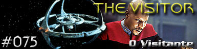
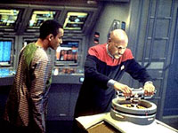
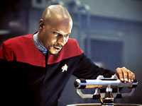
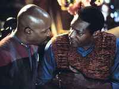
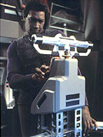

|
Deep
Space Nine
Temporada 4

Anlise do episdio por
Luiz
Castanheira



|
MANCHETE
DO EPISDIO Episdio anterior | Prximo episdio Data Estelar: Desconhecida Décadas no futuro, uma noite chuvosa na Luisiana, “Jake Sisko”, um velho escritor aposentado com cerca de oitenta anos, recebe uma inesperada visita. Uma jovem aspirante à escritora, de nome Melanie, que veio em busca de inspiração e do por que “Jake” ter publicado apenas dois livros e ter desistido da carreira quando não tinha completado sequer quarenta anos. O velho reluta um pouco, mas decide contar a trágica história de sua vida, que começa exatamente quando ele tinha 18 anos e o seu pai morreu.  Já com quase quarenta anos, “Jake” é um escritor premiado de dois livros, e vive, com uma bela esposa, na casa em que passaria o resto da vida. Um dia recebe em sua casa o comandante Nog, que esteve recentemente no setor Bajoriano. Naquela mesma noite o seu pai lhe faz mais uma “visita”, vê-lo desaparecer novamente diante dos seus olhos foi demais para ele, que decidiu que custasse o que custasse iria traze-lo de volta. Ele voltou a escola, estudou durante anos desesperadamente uma maneira de entender o acidente e conceber um plano que pudesse resgatar o capitão. Para isto abandonou a sua carreira de escritor e acabou perdendo a esposa, que não suportou a sua obsessão, no processo. Enfim “Jake” entendeu o que aconteceu com Sisko, ele ficou aprisionado em uma espécie de “bolsão do subespaço”, no interior do qual o tempo passa a uma taxa muito mais lenta que no exterior. Estando junto com o pai no momento do acidente eis que se criou uma espécie de elo subespacial entre os dois. O fenômeno original estava por se repetir e ele planejou recriar o acidente e usar tal “elo” para trazer o seu pai de volta para o espaço normal. Ele recrutou os veteranos Julian Bashir e Jadzia Dax e com a ajuda do capitão Nog conseguiu arrancar a velha Defiant de um depósito para leva-la até a Fenda Espacial e recriar as mesmas condições do acidente original. Infelizmente o seu elaborado plano não dá resultado e ele é puxado para dentro do bolsão junto com o seu pai. Sisko fica assustado com a idade avançada do filho (agora visivelmente mais velho que ele) e infere de pronto o que acontecera com “Jake” e o faz prometer que ele tente fazer uma vida melhor para si e se esqueça definitivamente do pai. O fenômeno se encerra e resta apenas “Jake” chorando no ombro de Dax na Engenharia da Defiant. “Jake” explica a Melanie que Ben em breve irá fazer uma nova "visita" e que ele chegou a conclusão (após outros tantos anos de estudo) que a única forma de restaurar a vida de seu pai é cortar o elo entre eles (ou seja, se matar) quando eles dois estiveram juntos, o que o fará teoricamente voltar ao exato momento do acidente. Melanie, muito emocionada, agradece por tudo e parte (levando o original anotado do livro, ainda não publicado, que Jake escreveu para satisfazer o desejo do pai). O "velho Jake" toma a última dose da droga. Ele pega a bola de beisebol de Ben e espera pelo pai sentado em uma poltrona e acaba cochilando. O velho escritor acorda e vê Sisko sentado a sua frente, olhando-o ternamente. O capitão diz que está muito orgulhoso por ele ter voltado a escrever depois do último encontro deles (a dedicatória do livro é: “Para o meu pai que está voltando para casa.”), mas rapidamente percebe que algo não está bem com a saúde do seu filho e fica devastado por saber que “Jake” decidiu se matar. ”Jake” diz que ele faz isto por ele e pelo menino que um dia ele foi e morre nos braços do pai, não sem antes dizer a Sisko para ele evitar a descarga de energia que o vitimou no acidente original. De volta ao presente, Ben tem uma espécie de “premonição” na Engenharia da Defiant e consegue se desviar a tempo e evitar o acidente, ele abraça Jake com a voz embargada e diz que está tudo bem agora. Comentários  Poucas experiências são tão marcantes para o ser humano quanto perder alguém amado e aprender a lidar com esta perda. Pensar ter visto este alguém na multidão, não querer dar prosseguimento a sua vida por achar que está traindo aquela pessoa ausente, que a está esquecendo, sozinha, em "algum lugar". Estes são alguns dos sentimentos comuns a todos aqueles que passaram pela perda de um ente querido. E é em grande parte o por que deste segmento ser tão bem sucedido dramaticamente, ainda que a sua história em si reconhecidamente se passe no terreno do extraordinário. Lidar com perda de um ente querido não é novidade para esta série, uma vez que a sua primeira história (do seu piloto, “Emissary”) efetivamente tratou de Sisko retomando a sua vida após a perda de Jennifer (a sua primeira esposa). A tantalizante questão que “The Visitor” coloca é: “E se... Quem se foi REALMENTE está preso sozinho em algum lugar?” E é justamente esta questão que leva a imensurável tragédia de Jake. Devorado por tamanha obsessão que o faz perder: a sua esposa, a sua carreira de escritor e finalmente e literalmente a própria vida. Não é novidade em Jornada nas Estrelas o dispositivo de trama que associa um sacrifício, um destino trágico, a restauração da linha temporal, ou em termos mais práticos a continuidade da série (NOTA: este ponto em particular é tratado de forma bastante breve neste artigo para evitar perda de foco). Existem exemplos ilustres de tal construção em clássicos como “The City On The Edge Of Forever” e “Yesterday’s Enterprise”. Ao contrário destes, entretanto, o sacrifício final de Jake não visa salvar a Federação e além, mas simplesmente mudar o destino de um homem. O que traz um elemento definitivamente distinto e próprio à equação. Enxergando a série como um todo, a morte de Sisko talvez tivesse salvado incontáveis vidas. Tal possibilidade nunca passou pela mente de Jake, ele queria o seu pai de volta, para o garoto que um dia ele foi. Ponto final! Este tipo de mentalidade é bem característico da série, e é tornado ainda mais explícito em uma decisão análoga que o “Odo de Gaia” toma em “Children Of Time” da quinta temporada (também escrito por Echevarria). Isto garante que em seu cerne o segmento não é meramente a iteração de uma fórmula bem sucedida, mas sim uma exploração da questão sob um novo ângulo. Em virtude da sua premissa e da antecipação de uma tragédia tão extrema e excruciante, era necessário um relacionamento que fosse de fato verdadeiro nos termos mais mundanos e cotidianos possíveis, que servisse de lastro para a característica tão desesperadamente maior que a vida que ele deveria atingir, para que a tragédia de Jake funcionasse nos termos propostos. Felizmente o relacionamento de pai e filho de Ben e Jake cumpre tal requisito com louvor e isto impede que o episódio possa ser classificado como manipulativo. Crucial é o fato de Todd ser infinitamente aceitável como Jake e como filho de Ben. O que sim constitui quase que um milagre em termos de escalação de elenco. O elemento de trama remanescente trata dos específicos da morte de Jake (desde o acidente original de Sisko, é claro). Talvez toda a “tecnobaboseira” usada pudesse ser expurgada, pois é absolutamente claro que o elo entre os dois é emocional e não “subespacial”. Existe muita explicação técnica (apesar da analogia do cordão, que não é lá muito robusta, mas ajuda bastante a minimizar tal problema) que deveria ter sido evitada. Talvez o único senão de um brilhante roteiro. A narrativa de Jake é usada de maneira extremamente efetiva. Não somente ela nasce organicamente do fato de tanto ele quanto Melanie serem em ultima instância dois “contadores de história”, mas tal dispositivo ajuda a manter sob controle uma história que se passa durante tão grande intervalo de tempo. Ela poderia facilmente ficar desconjuntada ou se mover aos solavancos, o que absolutamente não é o caso aqui.  Obviamente a palavra escrita é condição necessária, mas não suficiente para o sucesso de um episódio, é preciso uma competente execução e nisto “The Visitor” tem poucos contendores em Jornada. O segmento é sem dúvida um dos mais bem acabados da história da franquia, não somente possui um roteiro espetacular, mas ele é trazido a vida de uma forma tão perfeita que chega a ser desconcertante. No centro de tal execução jaz o trabalho do diretor David Livingston, extremamente virtuoso, usando técnicas sofisticadas que tornaram infinitamente suaves e tocantes às abruptas mudanças de cenário que pedia o roteiro (para um tratamento análogo e complementar ver a direção de James L. Conway de “Necessary Evil” da segunda temporada). O tema principal de Dennis McCarthy para “The Visitor” é um dos três mais marcantes de DS9 (ao lado do tema original da série e da canção “The Way you Look Tonight”), a suíte completa de “The Visitor” é tocada no último episódio da série, “What You Leave Behind”, e lá é misturada por McCarthy com os outros dois temas mencionados de uma maneira verdadeiramente inspirada. Na última cena do capitão na série, com Kasidy Yates no templo celestial (no mesmo cenário do “espaço de luz” visto neste segmento, aliás), à volta de tal tema foi o aviso inequívoco aos espectadores de que era chegada a hora de finalmente dizer adeus a Ben Sisko. Obviamente se os atores não estivessem à altura de tão sublime execução, o segmento estaria perdido. Lofton foi excelente ao traduzir o senso de desorientação e solidão de Jake em um primeiro momento, especialmente na famosa “cena das sombras” (genial idéia de Livingston) ao lado de uma absolutamente fantástica Nana Visitor. Um eco desta cena é justamente a cena final da série. Entre os que tiveram menos trabalho, Terry Farrel não esteve muito bem envelhecida (a maquiagem dela em particular não foi das mais felizes) ao contrário de El Fadil que parece que nasceu para fazer este tipo de papel (ver “Distant Voices” da terceira temporada). Eisenberg e Gorg foram corretos. Rachel Robinson foi uma grata surpresa, com grande química com Todd e em um certo sentido a sua Melanie fez o papel de conduinte da audiência até o personagem do velho Jake. Brooks foi colossal, passando perfeitamente o senso de terrível desorientação do seu personagem, auxiliado por um roteiro que não se esquece do seu lado na equação. Incrivelmente verdadeiro quando Sisko: diz ao velho Jake para seguir com a sua vida, observa calmamente o despertar do seu filho (a idéia de começar com uma noite chuvosa e terminar com raios de sol quando da morte de Jake também foi uma bela idéia de Livingston) e diz “Jake... Meu doce garoto”, no momento da morte dele.  E as rapidinhas: Ben Sisko reteve as memórias de sua experiência? Alguns gostam de pensar que o capitão não reteve nenhuma lembrança do que aconteceu ao final do episódio (que ao voltar ao momento do acidente as suas memórias foram apagadas no processo a menos do suficiente para se desviar da descarga e ter algum tipo de alivio ao ver o seu filho do lado dele), um ponto recorrente de discussão entre os fãs. Alguns preferem entender que em nossas vidas, quando, por exemplo, atravessamos a rua e vem um carro em alta velocidade em nossa direção e "alguma coisa" nos avisa do perigo e nos faz desviar é por que existe alguém no universo que nos ama tanto, mas tanto, que seria capaz de morrer por nós. Outros preferem pensar que Sisko reteve sim as lembranças de tudo que aconteceu, sendo exatamente por isto que não se despediu de seu filho em "What You Leave Behind", justamente com medo de dar inicio a uma obsessão como a descrita aqui. Seja como for, isto nunca foi apresentado de forma explícita na série. Sobre o futuro alternativo do episódio: - É mesmo de arrepiar o pensamento de que talvez a prematura morte de Ben Sisko pudesse ter evitado a guerra com o Dominion (a perda de “zilhões de vidas”), a morte de Jadzia Dax, a destruição da Defiant original etc. etc. Tomando como aceitável o cenário político de tal futuro, pode se supor que os Fundadores simplesmente se aproveitaram de tal situação para se infiltrar nos altos escalões dos governos das grandes potências e absorver todo o quadrante alfa de uma maneira extremamente lenta e imperceptível, o que seria essencialmente uma premissa para toda uma nova série. Uma que talvez tivesse excelentes condições de falar sobre o nosso mundo contemporâneo. - Mas também podemos supor uma versão diferente de tal história. Talvez a paranóia Klingon tivesse sido tão imensa que os Fundadores depois de algum tempo perceberam simplesmente que não haveria mais por que temer alguma investida por parte do quadrante Alfa. A guerra não teria acontecido de forma alguma. - Ainda nesta linha de raciocínio (“sem guerra com o Dominion”), Odo, sem muitas opções para onde ir e enfim percebendo que nunca poderia ter um relacionamento com Kira (devastada então com as mortes quase seguidas de Bareil e Sisko e obviamente sem lugar na estação assim como Odo) poderia ter decidido voltar aos do seu povo (o que de fato aconteceu ao final da série, mas por diferentes razões), o que seria mais um motivo bastante forte para os Fundadores perderem interesse no quadrante Alfa. - Apesar de ser Jadzia e não Ezri no futuro do episódio, perceber que ela e Julian (será que ele se casou com a bailarina?) mantiveram a amizade é completamente de acordo com o espírito do programa. Quark poderia ter sim muito bem comprado a sua lua (para mantê-la provavelmente como o “último reduto do idealismo Ferengi”). E Rom ter ajudado de alguma maneira a distância, algo que também não é incompatível com o final da série. Worf ter poder sobre o alto conselho Klingon bate bem com o seu destino em “What You Leave Behind”, assim como a ausência de O’Brien (possivelmente na terra, aposentado dos seus dias na Academia e curtindo os netos, mesmo os bisnetos). - Talvez o maior presente a este autor neste “futuro alternativo” seja saber que mesmo com décadas de administração Klingon a estação “mesmo em estado precário” continua “lá” e com nenhum outro senão Morn tomando conta do bar. Sobre ver “What You Leave Behind” e ver em seguida “The Visitor”: - Como já mencionado neste texto, algumas partes de “The Visitor” encontram eco em “What You Leave Behind” (episódio final da série). O mais curioso é que o contrário também é verdadeiro, por um simples motivo: Sisko de fato se torna uma forma de vida não linear e passa a viver com os Profetas de Bajor no interior do templo celestial (fenda espacial). Obviamente não é a mesma situação vista no episódio desta semana, mas a situação é análoga, o suficiente para ressonar do mesmo jeito. Em particular a cena do funeral (também sem corpo), uma tomada inspiradíssima de Livingston com um caminhão de extras e a cena na ponte da Defiant, ver DS9 mais uma vez “depois de tanto tempo” e ouvir Bashir dizer que após resgatar o capitão Sisko eles visitariam o “Morn’s” para tomar um drinque, “pelos velhos tempos”. Poucas séries parecem amar tanto os seus personagens quanto esta. - Diversas falas do “Velho Jake” (especialmente as primeiras cenas) saíram quase que diretamente da boca de Ira Behr, o mentor de DS9. Das tradicionais citações as escrituras até o descarado uso de lápis e papel, ali estavam representadas inúmeras atitudes e sensibilidades dele (“Você devia ler mais”). Em muitos sentidos, Melanie é a esperança de que a tradição de contar uma boa história nunca se perca. “The Visitor” é um daqueles raros segmentos em Jornada nas Estrelas, ou na atribulada e corrida produção de um típico programa de TV em geral, em que todos os elementos desde a concepção mais básica até o mais fino detalhe de execução entram em foco com extrema clareza e especial significado e ressonância. Este trágico conto sobre o eterno elo entre um filho e um pai constitui provavelmente o mais emocionante momento já concebido neste universo ficcional e talvez além. Citações Sisko
- "It's life, Jake. You can miss it if you don't open
your eyes." Melanie
- "You are my favorite author of all time." Velho
Jake - "There's only one first time for everything, isn't
there? And only one last time, too." Velho
Jake - "Time passes--and they realize that the person
they lost is really gone--and they heal." Melanie
- "I'm not a writer, yet." Sisko
- "You still have time to make a better life for yourself--promise
me you'll DO that!" Sisko
- "To my father, who's coming home." Melanie
– “Thanks for everything.” Trivias
Ficha Técnica Escrito
por Michael Taylor Elenco Avery
Brooks como Benjamin Lafayette Sisko Elenco convidado Tony
Todd como o adulto Jake Sisko Episdio anterior | Prximo episdio |